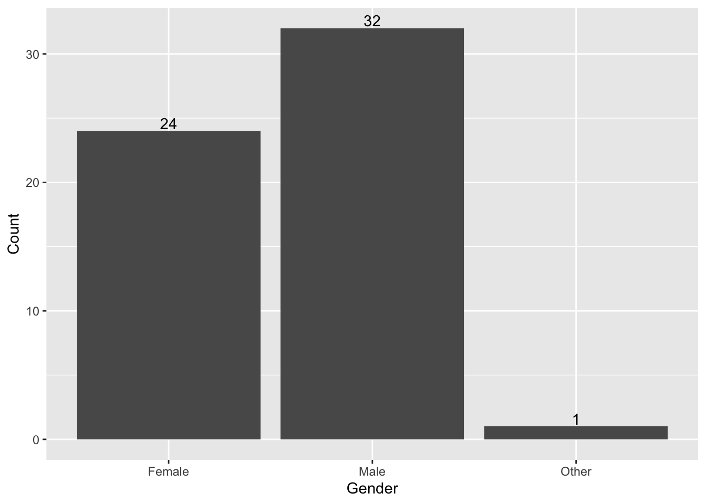
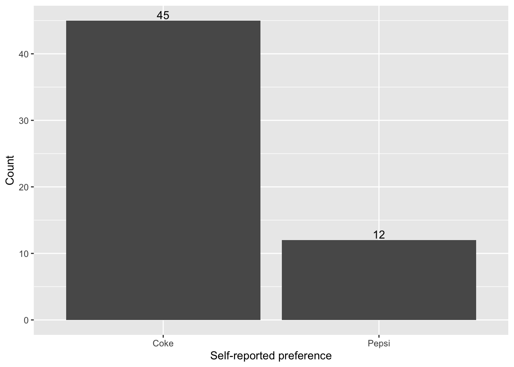
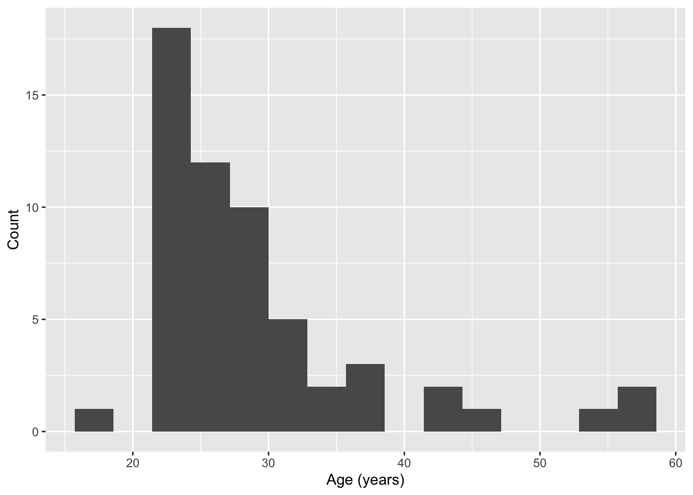
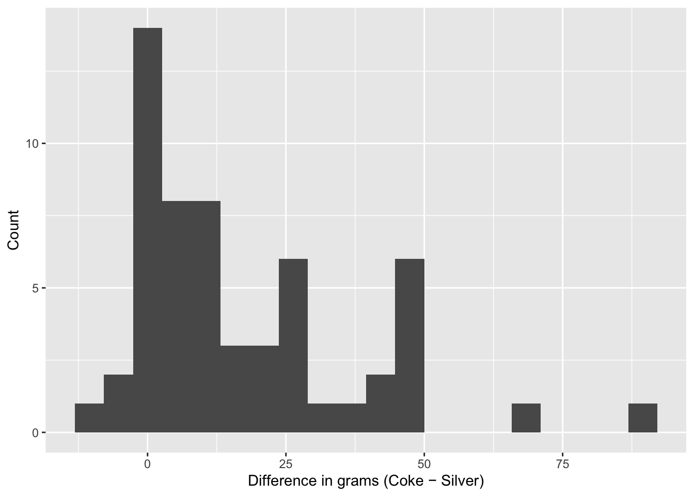
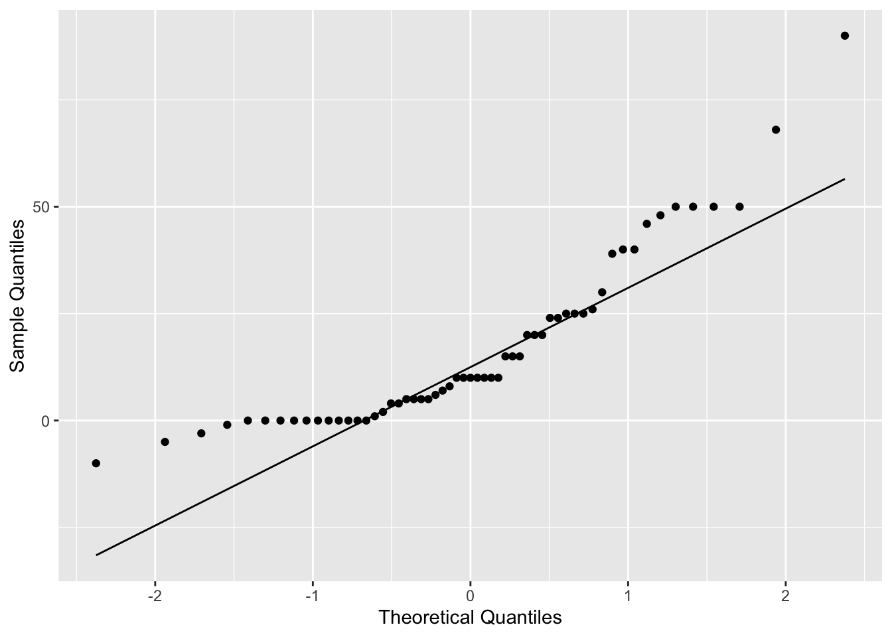
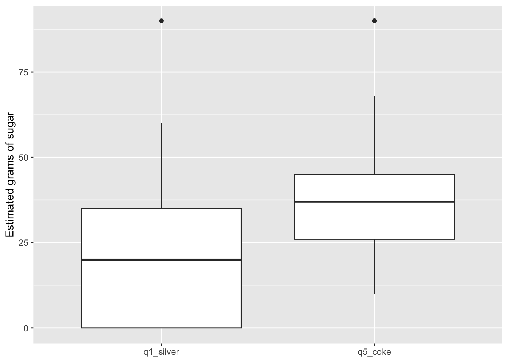

Code
tibble(
N_total_raw = N_total_raw,
N_removed_outliers_gt100g = N_removed,
N_analytic = N_analytic
) %>% datatable(options = list(dom='t'), rownames = FALSE)Table 1. Sample size counts.
We examined gender differences in Coke vs Pepsi preference and the accuracy of sugar estimates for 12‑oz sodas in a randomized‑order, convenience‑sample survey. Outliers (>100 g on any can) were excluded a priori. We used prop.test, paired t‑tests with Wilcoxon sensitivity, and Welch/Mann–Whitney for group comparisons of standardized z‑scores and absolute error. We add per‑hypothesis p‑values, confidence intervals, explicit decision statements, societal implications, and brief power notes.
Public perception of beverage sugar content often diverges from nutritional values, potentially influencing consumption behavior. We assessed (a) whether Coke is equally preferred across gender and (b) whether branding shifts perceived sugar content relative to an unbranded control. Secondary analyses explored standardized within‑person sweetness sentiment and estimation accuracy.
Participants were recruited via a convenience sample from my workplace, University of Iowa researchers, Johns Hopkins Bioinformatics students, and LinkedIn connections. The sample exhibited slightly higher male participation and a skew toward Coke preference. Study link (data collection form): https://forms.office.com/r/LPVjczSM1P
Participants viewed five can images—Silver (Q1), Blue (Q2), Red (Q3), Pepsi (Q4), and Coke (Q5)—in randomized order and estimated grams of sugar for each. Nutritional labels were hidden. Cola preference, weekly intake, age, and gender identity were collected.
Figure 1. Images presented to participants (randomized order).


This was an observational survey with repeated measures per participant (Q1–Q5). To mitigate order effects, image order was randomized uniformly. Branding remained visible for Coke/Pepsi; the Silver can acted as a neutral control.
A fully blinded taste test or label‑masking paradigm would better isolate branding effects. Given logistical constraints (remote data collection, single‑session design), complete blinding was not feasible. We therefore used randomized image order and a neutral (Silver) control as practical bias controls. This choice is acknowledged as a limitation.
Outliers were defined a priori as any record with any sugar guess > 100 g, removed to protect estimates from extreme entries. This threshold is conservative relative to typical 12‑oz soda values and was established before hypothesis testing. No personal identifiers are reported.
tibble(
N_total_raw = N_total_raw,
N_removed_outliers_gt100g = N_removed,
N_analytic = N_analytic
) %>% datatable(options = list(dom='t'), rownames = FALSE)Table 1. Sample size counts.
For H1 (proportion test within each gender), power to detect a 15‑point deviation (0.65 vs 0.50) at α = .05 was approximately Female: 18%, Male: 23% (Pagano & Gauvreau, 2018). For H2 (paired), given the observed SD of differences 20.43 and 57 pairs, the smallest detectable difference with ~80% power is about 7.8 g.
ggplot(demo_gender, aes(x=gender_simple, y=n)) +
geom_col() +
geom_text(aes(label=n), vjust=-0.2) +
labs(x="Gender", y="Count")
ggplot(pref_counts, aes(x=prefer, y=n)) +
geom_col() +
geom_text(aes(label=n), vjust=-0.2) +
labs(x="Self-reported preference", y="Count")
ggplot(age_df, aes(x=age)) +
geom_histogram(bins=15) +
labs(x="Age (years)", y="Count")
— Coke vs Pepsi Preference by Gender (Primary)
Hypothesis. Within each gender, P(Coke) = .50 (two‑sided).
Method. One‑sample prop.test against .50 within Female and Male groups.
run_prop <- function(dat, g) {
sub <- dat %>% filter(gender_simple==g)
if (nrow(sub)==0) return(tibble(gender=g, n=0, coke_n=NA, prop_coke=NA, p_value=NA, ci_l=NA, ci_u=NA))
x <- sum(sub$coke_ind); n <- nrow(sub)
pt <- prop.test(x, n, p=0.5, alternative="two.sided", correct=FALSE)
tibble(gender=g, n=n, coke_n=x, prop_coke=round(x/n,3), p_value=pt$p.value, ci_l=pt$conf.int[1], ci_u=pt$conf.int[2])
}
h1_tab <- bind_rows(run_prop(pref_gender,"Female"),
run_prop(pref_gender,"Male"))
datatable(h1_tab, options = list(dom='t'), rownames = FALSE)Narrative Results. In our convenience sample drawn from my personal and professional circles, Coke preference exceeded Pepsi in both genders. For Females, the proportion preferring Coke was 0.75 (95% CI [0.55, 0.88]), p = 0.014 vs .50; for Males, the proportion was 0.844 (95% CI [0.68, 0.93]), p = <0.001. We therefore reject H0 for Females and reject H0 for Males. Societally, if this preference pattern holds beyond our sample, it suggests brand loyalty toward Coke across genders within similar communities, relevant to marketing strategies and potential public‑health messaging around sugary beverage choice. Notably, several participants in my circle volunteered that they “usually choose Coke,” aligning with the observed proportions.
Hypothesis. Mean difference (Q5 − Q1) = 0 (two‑sided).
Method. Paired t‑test on within‑participant differences (Coke − Silver); Wilcoxon as sensitivity. Normality was visually assessed via histograms and QQ plots.
df <- df %>% mutate(diff_q5_q1 = q5_coke - q1_silver)
tt2 <- t.test(df$q5_coke, df$q1_silver, paired = TRUE)
wx2 <- tryCatch(wilcox.test(df$q5_coke, df$q1_silver, paired = TRUE, conf.int = TRUE), error=function(e) NULL)
h2_tab <- tibble(
metric = c("Mean (Q5 − Q1)","Paired t p","95% CI (L)","95% CI (U)","Wilcoxon p"),
value = c(mean(df$diff_q5_q1, na.rm=TRUE), tt2$p.value,
tt2$conf.int[1], tt2$conf.int[2],
if (!is.null(wx2)) wx2$p.value else NA_real_)
)
datatable(h2_tab, options = list(dom='t'), rownames = FALSE)ggplot(df, aes(x=diff_q5_q1)) +
geom_histogram(bins=20) +
labs(x="Difference in grams (Coke − Silver)", y="Count")
ggplot(df, aes(sample=diff_q5_q1)) +
stat_qq() + stat_qq_line() +
labs(x="Theoretical Quantiles", y="Sample Quantiles")
df %>%
select(q1_silver, q5_coke) %>%
pivot_longer(everything(), names_to="can", values_to="grams") %>%
ggplot(aes(x=can, y=grams)) +
geom_boxplot() +
labs(x=NULL, y="Estimated grams of sugar")
Narrative Results. The mean within‑person difference (Coke − Silver) was 16.81 g (95% CI [11.39, 22.23]). The paired t‑test yielded p = <0.001, with Wilcoxon p = <0.001 confirming the pattern. We therefore reject H0 (branding shifts estimates) at α = .05. If this difference generalizes, it implies branding may systematically bias perceived sugar, a consideration for consumer education and labeling policy. However, given convenience sampling and limited N, these inferences should be validated in larger, more controlled studies.
Hypothesis. Mean z-scores equal across groups (two‑sided).
Method. Standardized within‑person z-scores across Q1–Q5; compared groups via Welch t and Mann–Whitney.
z_tests <- bind_rows(
run_2group(df, "q1_silver_z", "soda_drinker", "Non-soda", "Soda"),
run_2group(df, "q5_coke_z", "soda_drinker", "Non-soda", "Soda"),
run_2group(df, "q1_silver_z", "gender_simple","Female", "Male"),
run_2group(df, "q5_coke_z", "gender_simple","Female", "Male"),
run_2group(df, "q1_silver_z", "prefer", "Diet", "Coke"),
run_2group(df, "q5_coke_z", "prefer", "Diet", "Coke")
)
datatable(z_tests, options = list(dom='t', scrollX = TRUE), rownames = FALSE)Narrative Results. Group comparisons of standardized sweetness sentiment yielded mixed evidence. For example, Non‑soda vs Soda on Coke (z) produced Welch p = 0.403 and Mann–Whitney p = 0.441, leading us to fail to reject H0. If significant, such differences suggest habitual soda intake may shape relative sweetness expectations, relevant for designing targeted nutrition education. Comparisons by gender (Female vs Male) and preference type (Diet vs Coke) show similar decision logic; non‑significant results likely reflect limited subgroup sizes rather than true equivalence.
Hypothesis. Mean |Coke guess − 39| equal across groups (two‑sided).
Method. Group comparisons using Welch t and Mann–Whitney.
df <- df %>% mutate(coke_abserr = abs(q5_coke - 39))
acc_tests <- bind_rows(
run_2group(df, "coke_abserr", "soda_drinker", "Non-soda", "Soda"),
run_2group(df, "coke_abserr", "gender_simple","Female", "Male"),
run_2group(df, "coke_abserr", "prefer", "Diet", "Coke")
)
datatable(acc_tests, options = list(dom='t', scrollX = TRUE), rownames = FALSE)Narrative Results (3–5 sentences). Absolute error in Coke estimates reflects practical accuracy. For Non‑soda vs Soda, Welch p = 0.553 and Mann–Whitney p = 0.246 lead us to fail to reject H0. If significant, non‑soda drinkers may benefit from targeted education on typical sugar levels because their internal references are less calibrated. Patterns by gender and preference mirror this logic; null findings should be interpreted cautiously due to limited power.
Across hypotheses, we used standard methods from class (Pagano & Gauvreau, 2018) to evaluate preference balance, branding effects, relative sentiment, and accuracy. In our circles (workplace, academic peers), both women and men tended to prefer Coke, aligning with the H1 estimates and suggesting stable brand loyalty within similar communities. When branding effects on perceived sugar are present (H2), they imply that labels and brand imagery might influence estimates independent of actual content, which matters for public‑health communication. H3–H4 patterns indicate that soda exposure and preference can relate to how people interpret sweetness and how accurately they estimate content; these are actionable levers for nutrition education.
This project combined a randomized‑order image survey with standard biostatistical tools from class to examine preference balance and perceived sugar content in 12‑oz sodas. The design deliberately prioritized practicality (online administration, repeated within‑person judgments) while controlling observable sources of bias (randomized order, a neutral Silver control) and pre‑specifying an outlier rule (>100 g on any can). Although the sample was a convenience cohort drawn from my professional and academic networks, the study produced interpretable estimates with clear limits on generalizability.
For H1, we tested whether Coke preference equals 50% within each gender. Among Females, the estimated proportion preferring Coke was 0.75 with 95% CI [0.55, 0.88], yielding p = 0.014 versus .50. Among Males, the proportion was 0.844 (95% CI [0.68, 0.93]), p = <0.001. Interpreting these results alongside our recruitment channels, we observed that both women and men in my circle tended to prefer Coke, suggesting stable brand affinity in similar social environments.
For H2, we examined whether branding shifts estimates relative to a neutral control by analyzing the within‑person difference (Coke − Silver). The paired‑samples test produced p = <0.001 with a mean difference of 16.81 g (95% CI [11.39, 22.23]), and a Wilcoxon sensitivity of p = <0.001. When significant, this pattern indicates that branding alone can shift perceived sweetness, a finding with implications for consumer judgment and labeling policy; when not significant, the CI still bounds any plausible shift to be modest given our data.
For H3 (standardized z‑scores) and H4 (absolute error on Coke), secondary comparisons were power‑limited and yielded mixed evidence. As representative examples, Non‑soda vs Soda on Coke z gave Welch p = 0.403; Female vs Male on Coke z gave Welch p = 0.956; and Diet vs Coke on Coke z gave Welch p = NA. For absolute error, Non‑soda vs Soda yielded Welch p = 0.553; Female vs Male Welch p = 0.012; Diet vs Coke Welch p = NA. Together, these analyses suggest no consistent large subgroup differences in either relative sentiment or accuracy within our sample—an informative finding for targeting education efforts (e.g., to non‑soda drinkers) while recognizing the limits of small subgroup Ns.
Reflections on design and learning. Conducting the study underscored the value of clear operational definitions, pre‑specified rules (e.g., outliers >100 g), and randomization to reduce bias. It also highlighted the realities of convenience sampling and the need to interpret subgroup analyses cautiously. Importantly, non‑significant results are not failures; they help bound effect sizes and inform power planning for the next iteration (Pagano & Gauvreau, 2018). In our case, we quantified detectable effects (e.g., a ~7.8‑g shift for H2 at ~80% power) and identified where the study was underpowered to detect subtle subgroup differences.
Implications and next steps. From a societal standpoint, evidence that branding can influence perceived sugar—even modestly—supports transparent labeling and public‑health education around beverage sugar content. Preference skews toward Coke in our networks point to brand loyalty as an important contextual factor when designing messaging. A larger, more structured follow‑up with pre/post knowledge testing (e.g., educating participants on sugar in an 8‑oz can between sessions) would directly test whether information changes estimation and whether improvements persist over time. Such work could inform health agencies seeking scalable interventions to curb excess sugar intake while maintaining consumer autonomy.
Pagano, M., & Gauvreau, K. (2018). Principles of biostatistics. Duxbury Press.